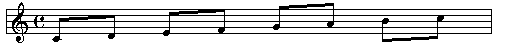
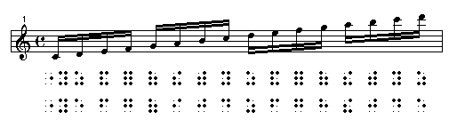
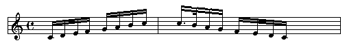
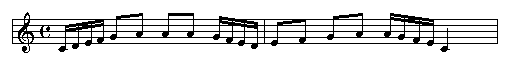
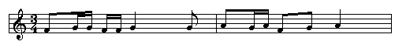
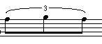

|
In music, notes with smaller values are often "grouped" into beats corresponding to the time signature. In the example below, the eighth notes are grouped to fit the quarter note:

The braille for this notation is simply a series of eighth notes. There is no special notation to show the connections between each pair of eighth notes:

In music that involves smaller notes -- specifically 16ths, 32nds, and 64ths (but not 128ths!), the transcriber can group chunks of notes into beat-equivalent unit. Let's look at the example below, looking first at the print notation. We have four groups of 16th notes, each group signified by a heavy double horizontal bar. For the sighted musician, this grouping helps him or her to identify the "beat". Typically, the first 16th note of each group is the "strong" beat, and it is often emphasized that way. We need a way to capture that sense in braille as well.
If you look at the first row of braille, we have simply brailled each note as a 16th note. We have "lost" the sense of a first strong beat, or a sense of four groups of 16 notes (rather than 16 individual 16th notes). The second row of braille "recaptures" that sense. In that braille, we have brailled the first note as its true value, a 16th note. The next three notes in the group are each then brailled as an eighth note. Each 16th note at the beginning of each group is brailled as its true value, followed by a series of 8th notes. This notation helps the braille reader to "pick out" the beat, just as the print reader gets his or her cues from the horizontal bars.

The rules (with examples) for grouping are as follows:
- The group must have at least three notes
- All notes in the group must have the same value, which means that if one of the notes in a group is dotted, you cannot use grouping

- if the group of notes is followed by an eighth note or eighth rest in the same measure, you may not use grouping. If, however, the eighth notes are in a new measure or in a divided measure, then you can group

- a rest can be the first note of a group, but if the rest is elsewhere, grouping cannot be used
- all notes of the group must be on the same braille line. (NOTE: a dot 5 is used to divide a measure between lines, if the complete measure cannot fit on a braille line.)
- If a bar line or music hyphen interrupts a group, do not use grouping.
- If you have brackets, slurs, expression marks, accidentals, ties, it is permitted to use grouping.
- Notes in a group cannot "cross the beat", meaning that all of the notes in a group must be in the same beat. Use this table below as a guide:
| Time Signature |
Groupings |
2/2 3/2 4/2
2/4 3/4 4/4 |
| 16ths, grouped by fours |
| 32nds, grouped by fours |
| 64ths, grouped by fours |
|
3/8 4/8
4/16 5/16 |
| 16ths, grouped by the measure |
| 32nds, grouped by fours for 3/8 and 4/8 time |
| 32nds, grouped by the measure for 4/16 and 5/16 |
| Smaller values unlikely |
|
| 6/8 9/8 12/8 |
| 16ths, grouped by sixes (compound beat) |
| 32nds, grouped by fours (simple beat) |
| 64ths, grouped by fours (half beat, simple) |
|
| 6/16 9/16 12/16 |
| 16ths, grouped by threes (compound beat) |
| 32nds, grouped by sixes (compound beat) |
| 64ths, grouped by fours (simple beat) |
|
| 6/2 6/4 9/4 12/4 |
all values grouped by four |
Simple time occurs when the top number of the time signature is 2,3,4,5, or 7. Compound time occurs when the top number is 6,9, or 12.
An example is shown below. In this example, we have two measures of 3/4 time. According to the table, we should have groups of four for the sixteenth notes. Notice also that the notes cross the beat -- the first two 16th notes are in the first beat, and the second two 16th notes are in the second beat.

There also exists what are known as "irregular" groupings. The most well-known (and the only one presented here) is the "triplet":

Some observations about triplets:
- if you have a series of four or more triplets in a row, you can use the double triplet sign (two groups of dots 2-3) in front of the first triplet (with a single triplet sign in front of the last triplet).
- triplets can contain rests, and may or may not have the slur sign over top. Continue to use the appropriate triplet sign
- be careful not to mistake a triplet printed "3" marking for a fingering sign (a notation used to show which finger to use to play the note, common in instrumental music)
|
 Tჸe $_hodor bARionlegitim@.
Tჸe $_hodor bARionlegitim@.